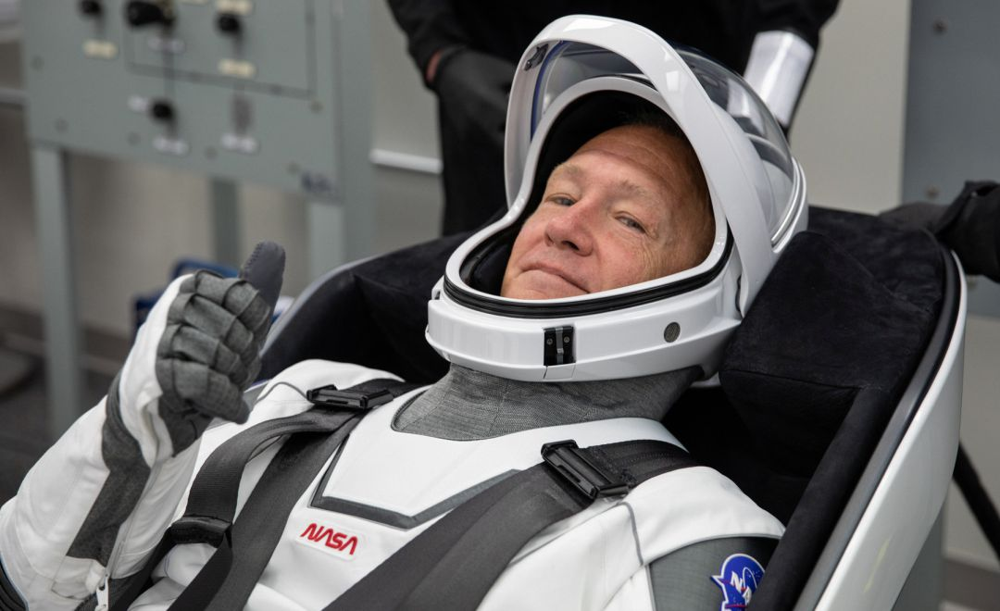

Trasformación Espacial
El Big Bang es cómo los astrónomos explican la forma en que comenzó el universo. Es la idea de que el universo comenzó como un solo punto, luego se expandió y se estiró para crecer tanto como lo es ahora, ¡y todavía se está extendiendo!
Hubble
telescopio que orbita la Tierra y toma increíbles fotografías de nuestro universo.
Matusalén
La estrella más antigua conocida por la humanidad
Artemis II
Es la primera misión tripulada a bordo del cohete Space Launch System
Estrellas
Esfera de gas caliete que brilla intensamente cuya energía es producida por un proceso interno de fusión nuclear . Las estrellas se encuentran en galaxias. Una galaxia no sólo contiene estrellas, sino también nubes de gas y polvo.
Las estrellas son motores de energía cósmica que producen calor, luz, rayos ultravioleta, rayos X y otras formas de radiación. Están compuestas casi en su totalidad de gas y plasma, un estado de supercalentamiento de la materia compuesta de partículas subatómicas. Aunque la estrella más conocida, el Sol, existe en solitario, tres de cada cuatro estrellas existen como parte de un sistema binario compuesto por dos estrellas orbitando mutuamente. Nadie sabe cuántas estrellas existen, pero podrían alcanzar un número extraordinario. Nuestro universo podría albergar más de 100 000 millones de galaxias, y cada una de ellas podría tener más de 100 000 millones de estrellas. Tan sólo en una noche clara, desde la Tierra pueden observarse alrededor de 3000 estrellas a simple vista. Los humanos de diferentes culturas han dibujado el cielo mediante estas estrellas.
Conocer a las estrellas
Nosotros
Explorar los secretos del universo en beneficio de todos; ELNATH explora lo desconocido en el aire y el espacio, innova en beneficio de la humanidad e inspira al mundo a través del descubrimiento”.
¿Estamos solos en el Universo? ¿Somos únicos en el Universo o somos nosotros parte de una sociedad cósmica? Éstas son las preguntas más antiguas que la humanidad se a preguntado desde la primera vez que el ser humano miro hacia el cielo. El esfuerzo de la Astrobiología de NASA busca contestar estas preguntas. Astrobiología es el estudio de la vida en el Universo. Proporciona una perspectiva biológica a varias áreas de investigación de NASA, relacionando tal esfuerzo como la búsqueda de planetas habitables, las misiones de la exploración a Marte y Europa, son los esfuerzos para entender el origen de la vida.

Victor Glover
Emprendio un viaje alrededor de la Luna a bordo de Artemis II.
Christina Hammock Koch
Cada uno tiene su propia historia, pero, juntos, representan nuestro credo

Reid Wiseman
El vuelo, que se basará en la exitosa misión sin tripulación Artemis I.